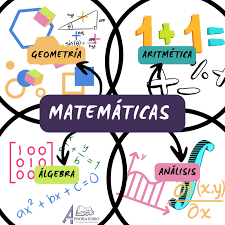

| Inicio |
Su importancia |
En la vida cotidiana |
Las matematicas |
Álgebra |
En las matematicas |
Las ramas de las matematicas

Las matemáticas han sido una de las ciencias más influyentes en el desarrollo de la humanidad. Desde los números y las formas hasta las ecuaciones más complejas, sus aplicaciones son innumerables en áreas tan diversas como la tecnología, la ingeniería, la economía y las ciencias naturales. Sin embargo, esta disciplina está compuesta por diferentes ramas, cada una de ellas centrada en resolver problemas específicos.
Si estás pensando en cómo las matemáticas pueden influir en tu futuro profesional, tanto el Grado en Ingeniería Informática de la Universidad Europea como su homólogo online son una excelente opción que combina el rigor matemático con la innovación tecnológica.
Además, en la Universidad Europea también se imparten titulaciones como el Grado en Ingeniería Matemática, también disponible en modalidad online.
Estas titulaciones te permitirán aplicar ramas como el álgebra y la geometría en el desarrollo de software, la inteligencia artificial y muchas otras áreas. En este artículo veremos las principales ramas de las matemáticas, cuáles son sus aplicaciones y cómo elegir la más adecuada para ti.
Principales ramas de las matemáticas y su aplicación
Las matemáticas abarcan una amplia variedad de áreas especializadas, cada una con aplicaciones prácticas que resultan fundamentales en diferentes campos del conocimiento. A continuación, enumeramos algunas de las más importantes.
Álgebra
El álgebra se centra en las estructuras, relaciones y cantidades. Es fundamental para resolver ecuaciones y estudiar las propiedades de los números y las variables. También es una herramienta esencial en disciplinas como la informática y las ciencias físicas, ya que permite modelar situaciones complejas. Además, se emplea en el análisis financiero y la economía para modelar y predecir el comportamiento de los mercados.
Aritmética
Es la rama más básica y antigua de las matemáticas. Se encarga de estudiar los números y las operaciones elementales, como la suma, la resta, la multiplicación y la división. Su aplicabilidad es muy amplia, desde la gestión de finanzas personales hasta el desarrollo de algoritmos básicos en informática.
Geometría
Se ocupa del estudio de las figuras, las formas y las propiedades del espacio. Es fundamental en campos como la arquitectura, el diseño gráfico y la ingeniería civil. Además, la geometría también es muy útil en el desarrollo de gráficos computacionales, software de realidad virtual y animación en 3D.
Análisis matemático
También conocida como cálculo, esta rama se enfoca en el estudio de las funciones y los límites, y es esencial para comprender fenómenos de cambio y movimiento. El análisis matemático es ampliamente utilizado en la física y los diferentes tipos de ingeniería, ya que permite modelar fenómenos dinámicos como el movimiento de objetos y el flujo de fluidos. En la economía, se utiliza para analizar las variaciones en los mercados y optimizar la toma de decisiones.
Estadística
La estadística se encarga de la recolección, análisis e interpretación de datos. Es esencial en la investigación científica, donde se utilizan métodos estadísticos para validar hipótesis. También se aplica en el marketing, la gestión empresarial y la ciencia de datos, pues ayuda a analizar grandes volúmenes de información y tomar decisiones fundamentadas. Con el auge del big data, su importancia ha crecido aún más en la última década.
Topología
Esta rama estudia las propiedades de los espacios que se mantienen a pesar de deformaciones continuas, como el estiramiento o la torsión. Aunque puede parecer abstracta, la topología tiene aplicaciones en la informática, la biología y la física, especialmente en el análisis de redes y la comprensión de estructuras moleculares.
¿Cómo elegir una rama de las matemáticas?
Elegir una rama de las matemáticas para especializarte depende de varios factores, ya que la decisión que tomes puede influir significativamente en tu futuro profesional. Existen diferentes salidas profesionales matemáticas a las que podrás acceder siendo matemático o ingeniero matemático. Aquí te damos algunas claves para ayudarte a tomar la mejor decisión:
Intereses personales: si disfrutas resolviendo ecuaciones y te gusta la lógica, probablemente te atraiga más el álgebra o el análisis matemático. Por otro lado, si prefieres visualizar formas y trabajar con el espacio, la geometría podría ser la mejor opción. Reflexiona sobre los temas que más te interesan y en los que te sientes más cómodo.
Aplicaciones prácticas: algunas ramas de las matemáticas están más directamente vinculadas a ciertas industrias. Por ejemplo, la estadística es crucial en el análisis de datos y la toma de decisiones empresariales, mientras que la topología se utiliza en campos como la informática y la biología para analizar redes y estructuras. Piensa en qué área te gustaría aplicar tus conocimientos.
Demanda laboral: algunas ramas tienen una mayor demanda en el mercado laboral. Por ejemplo, las habilidades en estadística y análisis matemático están muy valoradas en sectores como la inteligencia artificial, el análisis de datos y la investigación científica. Investigar las tendencias actuales del mercado te puede ayudar a identificar qué áreas ofrecen más oportunidades.
Compatibilidad con otras disciplinas: si tienes interés en combinar las matemáticas con otra carrera, como la ingeniería, la física o la informática, algunas ramas serán más útiles que otras. Por ejemplo, la geometría y el álgebra son fundamentales en el diseño de software y la programación o para ser ingeniero informático, mientras que el análisis matemático es clave en la física y la economía.
Tomar una decisión bien informada te permitirá sacar el máximo provecho de tus estudios y encaminarte hacia una carrera profesional que combine tus intereses con tus habilidades. Si estás pensando en estudiar matemáticas, la Universidad Europea cuenta con una gran variedad de carreras de ingeniería donde poder formarte para afrontar los retos laborales del mercado, como el Grado en Ingeniería Matemática, entre otros.
/p>